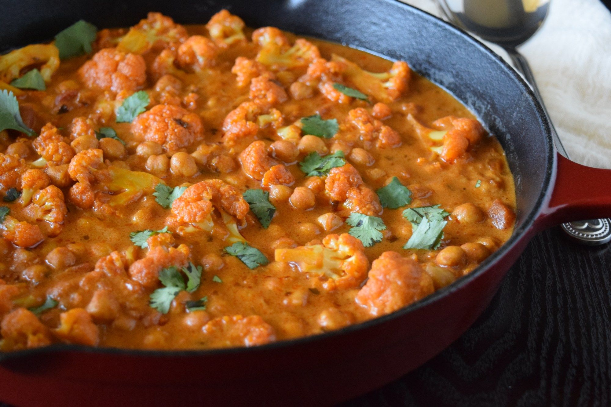

Chhola Tikka Masala Recipe

Description
Ingredients
- 1 tablespoon olive oil
- 1 medium onion, thinly sliced
- 2 carrots, thinly sliced
- 1 teaspoon garam masala
- 1 tablespoon tomato paste
- 15-ounce chhola (chickpeas), rinsed and drained
- 8 ounce can tomato sauce
- 3/4 cup water
Steps:
-
Heat oil in a large skillet over medium-high. Add onion and carrots and cook until tender, 5 to 6 minutes.
-
Stir in garam masala; cook and stir until mixture is fragrant, about 30 seconds.
-
Add tomato paste, ginger paste, garlic paste, and jalapeño pepper; cook and stir for 2 minutes.
-
Stir in chickpeas, tomato sauce, sugar and salt. Cook over medium-high heat until mixture is hot.
Reduce heat to low. Cover and simmer for 10 minutes.
-
Stir in 3/4 cup water and half-and-half.Continue cooking on low until heated through, about 1 minute.
For a saucier mixture, add more water if desired. Remove from heat; cover and keep warm.
-
Top with coriander leaves and serve with hot cooked basmati rice and/or naan.
Enjoy this yummy and fulfillin meal!